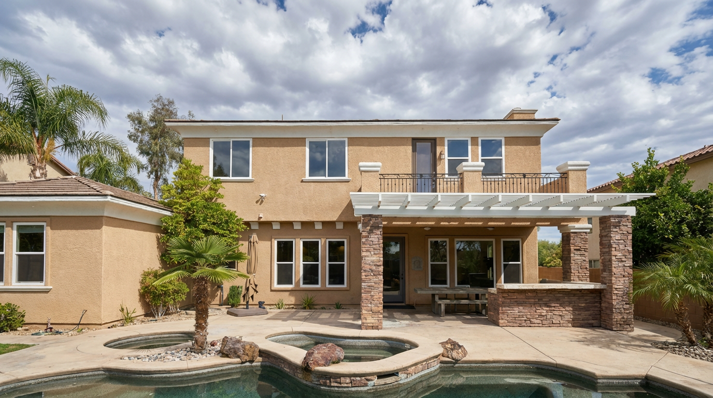

Architectural Photography
Jose
Diaz
Documenting structures, spaces,
and the details that define them.
Architectural Photography
Documenting structures, spaces,
and the details that define them.
The Work
Every structure holds a story — in the angle of light through a stairwell, the geometry of a facade, the way a space breathes. I photograph architecture with the patience to find those moments.
Based in Arizona, available for residential, commercial, and editorial projects.
Browse the Portfolio
